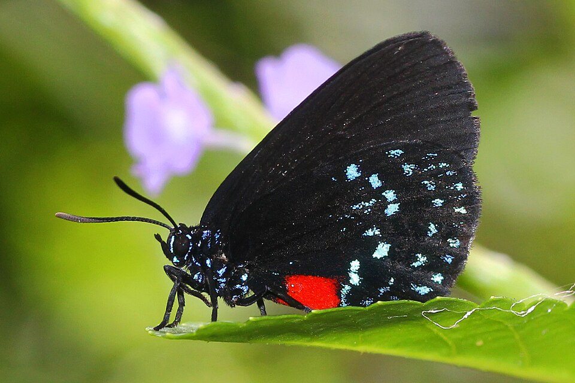
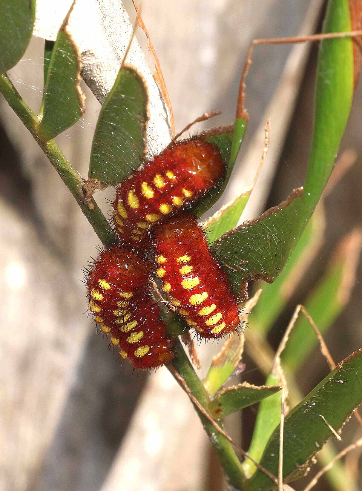

Eumaeus atala
Garden colonizerIf you have coontie, look here. Atala is not an old Cape Coral hammock butterfly. It is a southeast Florida species that has been colonizing planted coontie on this coast. People are photographing it in Lee County this month, including gardens.

Gardens with coontie or other cycads.
Coontie
Zamia integrifolia / Z. pumilagarden cycads
Black with iridescent blue spots, red abdomen, large red hindwing spot below; flies like a small moth. Unmistakable.